ROS2 입문 6차시 - ROS2 응용¶
ROS2 응용¶
ROS2 bag 이해 및 사용법 Bag 파일이란?
BAG 파일이란?¶
- ROS2 BAG은 시스템의 토픽에 게시된 데이터를 기록하기 위한 플랫폼 기능
- 각 토픽에서 수집된 데이터를 데이터베이스에 저장하며, 이를 재생하여 테스트 및 실험 결과를 재현할 수 있음
ROS2 bag 이해 및 사용법 명령어
BAG 파일레코딩¶
- 다음 명령어는“topic_name”에서 수신되는 메시지를“my_bag.bag”라는 이름의BAG 파일에 레코딩함
BAG 파일재생¶
- 다음 명령어는“my_bag.bag”라는 이름의BAG 파일을 재생함
BAG 파일정보표시¶
- 다음 명령어는“my_bag.bag”라는 이름의BAG 파일의 정보를 표시함
소스코드 참조
이 코드의 전체 내용은 Calculator 프로젝트 전체 소스코드 페이지에서 확인할 수 있습니다.
ROS2 BAG(Turtlesim)¶
- Turtle의 움직임을BAG 파일에 기록하기
- 기록된BAG 파일을 이용하여turtle 움직이기 실습
BAG 파일 만들기
준비단계¶
- 다음 실습은 여러 터미널을 사용하여 진행됩니다. 혼란을 방지하기 위해, 터미널 좌측 상단의 버튼을 눌러 미리3개의 터미널을 열어 두는 것을 권장합니다. 실습
BAG 파일 만들기
첫번째터미널에서turtlesim_node 실행¶
실습
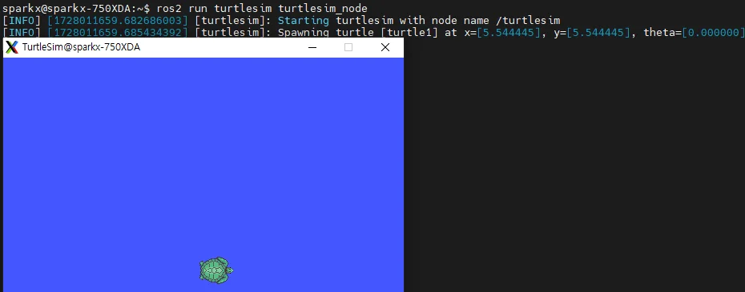
BAG 파일 만들기
두번째터미널에서turtle_teleop_key 실행¶
실습
BAG 파일 만들기
세번째터미널에서다음명령어를이용하여/turtle1/cmd_vel 토픽기록¶
- /turtle1/cmd_vel이라는 이름을 가진 토픽을turtle_bag이라는 이름의BAG 파일에 기록
- 주의 사항: 반드시“Subscribed to topic ‘/turtle1/cmd_vel’” 이 뜨는지 확인할 것 실습
BAG 파일 만들기
레코딩¶
- 두 번째 터미널로 이동하여 방향키를 사용해turtle을 임의로 이동시키기 실습
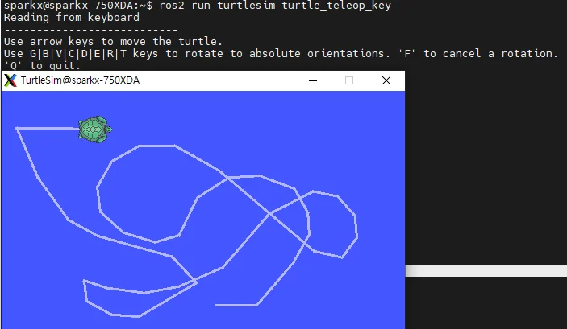
BAG 파일 만들기
세번째터미널에서실행되고있는record 종료¶
- 종료는ctrl + c 사용 실습
BAG 파일 만들기
세번째터미널에서저장된BAG 파일확인¶
실습 BAG 파일 만들기
BAG 재생¶
- 첫 번째 터미널에서 실행 중인turtlesim을 종료 후 재실행 실습
BAG 파일 만들기
세번째터미널에서다음명령어를이용하여저장되어있는BAG 파일재생¶
- 간혹 인터럽트 등의 이유로turtle의 궤적이 기록 당시와 정확히 일치하지 않을 수 있음
- 이 문제를 방지하려면turtle의 움직임을 기록할 때, 각 명령이 완전히 완료된 후 다음 명령을 실행해야함 실습
ROS2 BAG(2D, 3D, Lidar)¶
- 2D 카메라, 3D 카메라, Lidar를 이용하여 기록된BAG 파일 실행하기 실습
BAG 파일 실습
BAG 파일에기록된2d 카메라정보불러오기¶
- 아래 제공된 링크에서rosbag2_video.tar.gz 파일을 다운로드 받은 후 압축 풀기 https://drive.google.com/drive/folders/1zjGVRD5YQkiM_yLwjGOGRF5cruz8-Wsn
- 다운로드된 압축 파일의 압축 풀기 실습
BAG 파일 실습
BAG 파일에기록된2d 카메라정보불러오기¶
- 압축 풀린bag 파일의 정보 확인
- Bag 파일 반복 재생 실습
BAG 파일 실습
BAG 파일에기록된2d 카메라정보불러오기¶
- 새로운 터미널에서rviz 실행 실습
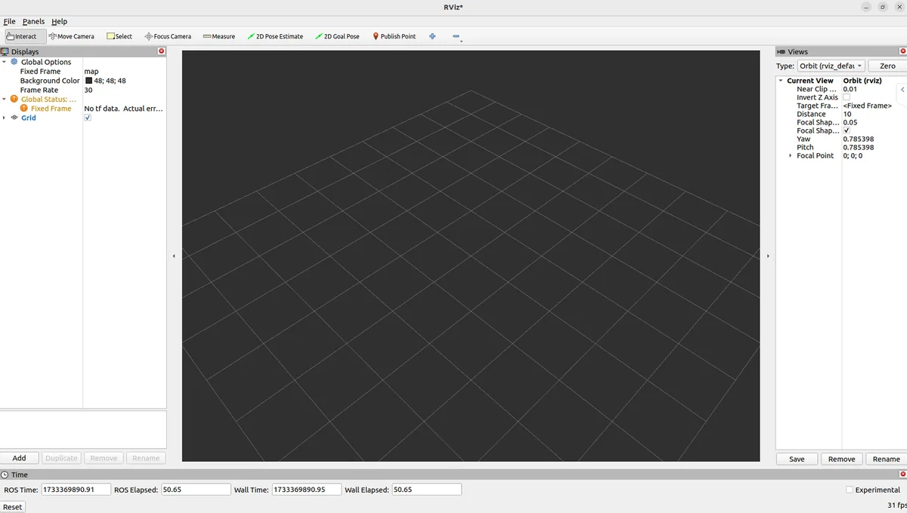
BAG 파일 실습
BAG 파일에기록된2d 카메라정보불러오기¶
- Rviz에서add버튼을 누른 후Image 선택후OK 버튼 누르기 실습
BAG 파일 실습
BAG 파일에기록된2d 카메라정보불러오기¶
- 사이드 바에서 이미지의topic name을“＼video_frames” 로 바꾸기
- 하단의Image 창에 영상이 재생되는 것을 확인 영상 출처: https://www.youtube.com/watch?v=29iFysOZg3Q 실습
BAG 파일 실습
BAG 파일에기록된3d 카메라정보불러오기¶
- 아래 제공된 링크에서realsense.tar.gz 파일을 다운로드 받은 후 압축 풀기 https://drive.google.com/drive/folders/1zjGVRD5YQkiM_yLwjGOGRF5cruz8-Wsn
- 다운로드된 압축 파일의 압축 풀기 실습
BAG 파일 실습
BAG 파일에기록된2d 카메라정보불러오기¶
- 압축 풀린bag 파일의 정보 확인
- Bag 파일 반복 재생 실습
BAG 파일 실습
BAG 파일에기록된2d 카메라정보불러오기¶
- 새로운 터미널에서rviz 실행 실습 BAG 파일 실습
BAG 파일에기록된2d 카메라정보불러오기¶
- Global Options의FixedFrame을‘camera_depth_optical_frame’으로 바꾸기 실습
BAG 파일 실습
BAG 파일에기록된3d 카메라정보불러오기¶
- ADD → By topic → camera → camera → depth → color → points → PointCloud2 선택후OK 버튼 클릭 실습
BAG 파일 실습
BAG 파일에기록된3d 카메라정보불러오기¶
실습
BAG 파일 실습
BAG 파일에기록된3d 카메라정보불러오기(특정시점)¶
실습
BAG 파일 실습
BAG 파일에기록된lidar 정보불러오기¶
- 아래 제공된 링크에서race_car.tar.gz 파일을 다운로드 받은 후 압축 풀기 https://drive.google.com/drive/folders/1zjGVRD5YQkiM_yLwjGOGRF5cruz8-Wsn
- 다운로드된 압축 파일의 압축 풀기 실습
BAG 파일 실습
BAG 파일에기록된lidar 정보불러오기¶
- 압축 풀린bag 파일의 정보 확인
- Bag 파일 반복 재생 실습
BAG 파일 실습
BAG 파일에기록된lidar 정보불러오기¶
- 새로운 터미널에서rviz 실행 실습

BAG 파일 실습
BAG 파일에기록된lidar 정보불러오기¶
- Global Options의FixedFrame을‘luminar_front’로 바꾸기 실습
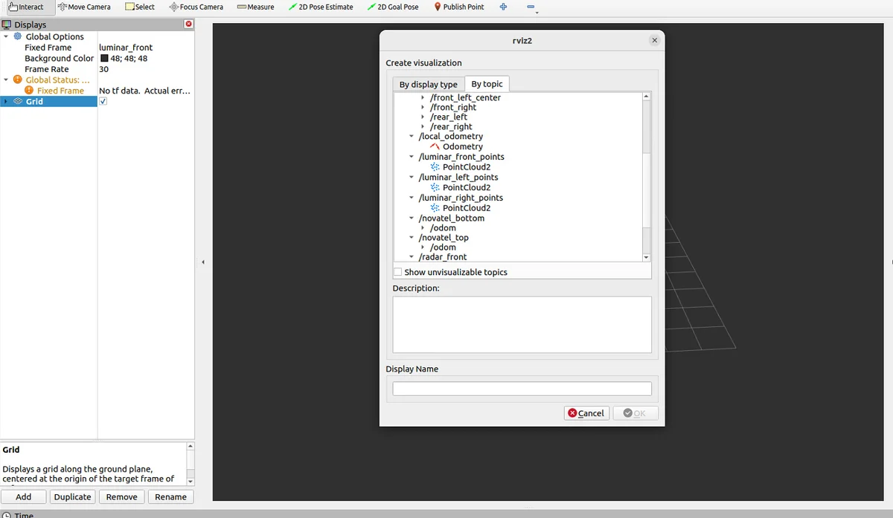
BAG 파일 실습
BAG 파일에기록된lidar 정보불러오기¶
- ADD → by topic → vehicle8 → luminar_front_points → PointCloud2 선택후OK 버튼 클릭 실습

BAG 파일 실습
BAG 파일에기록된lidar 정보불러오기¶
- 사이드 바의PointCloud2에서Size(m)을0.1로 변경 실습
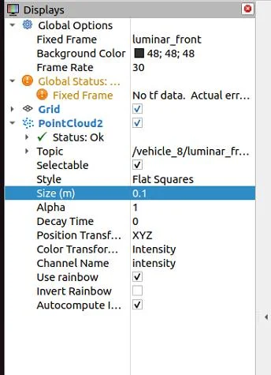
BAG 파일 실습
BAG 파일에기록된lidar 정보불러오기¶
- 사이드 바의PointCloud2에서Size(m)을0.1로 변경 실습
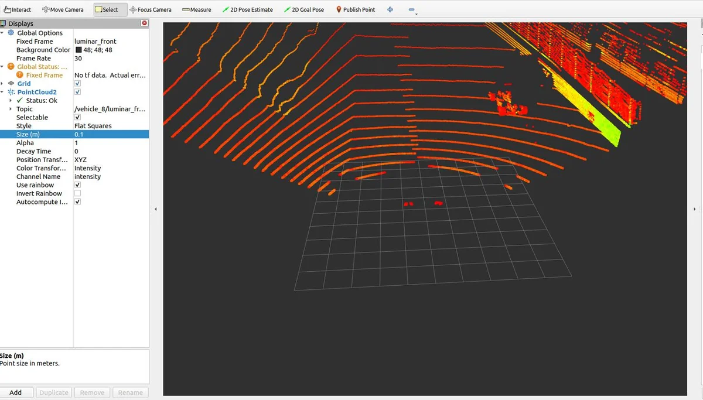
BAG 파일 실습
BAG 파일에기록된lidar 정보불러오기¶
- 실제RGB 영상과의 비교 실습
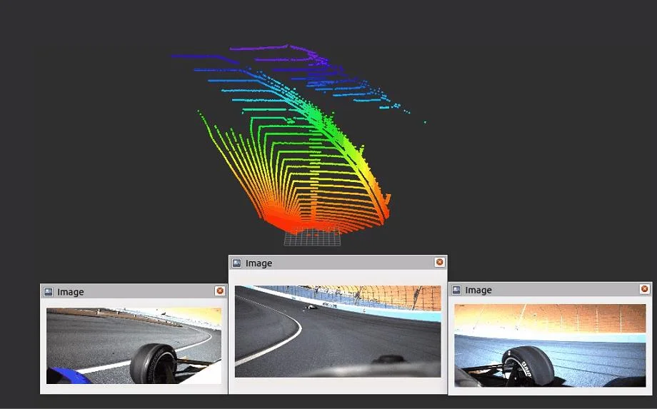
Visual Studio Code¶
Jupyter를 이용한 프로그래밍 VSCode에서Jupyter 사용
Visual Studio Code¶
Jupyter를 이용한 프로그래밍 VSCode에서Jupyter 사용 - 재부팅 후vscode를실행 - VS Code에서 ‘extension’ 탭으로 이동한 후, 'Jupyter' 검색 - 검색 결과에서 나타나는Jupyter를 선택하고 ‘Install' 버튼을 눌러 설치
Visual Studio Code¶
Jupyter를 이용한 프로그래밍 VSCode에서Jupyter 사용 - Vscode의 좌 상단에서newfile을 클릭하여 새로운 파일을 만듦 - 파일 명은HelloWorld.ipynb로설정
Visual Studio Code¶
Jupyter를 이용한 프로그래밍 VSCode에서Jupyter 사용 - 아래와 같이 빈칸에print("Hello World")를 입력 후shift + enter를입력 - Select Kernel창에서“Python Environments”를선택
Visual Studio Code¶
Jupyter를 이용한 프로그래밍 VSCode에서Jupyter 사용 - 나열된Python 버전 중 하나를 선택(되도록Global Env를 선택하는 것을 추천)
Visual Studio Code¶
Jupyter를 이용한 프로그래밍 VSCode에서Jupyter 사용 - 이후python 코드가 성공적으로 실행되는 것을 확인 가능
Visual Studio Code - extension¶
Jupyter를 이용한 프로그래밍 VSCode에서Jupyter 사용 - Extension의 주요 역할 및 기능 - 프로그래밍 언어 지원 추가: 추가 언어를 지원하거나 기존 언어의 기능을 확장 (예: Python, YAML등) - 생산성 향상 도구: 코딩, 탐색, 리팩토링, 반복 작업을 자동화해 생산성 향상 (예: XML Tools, Markdown All in One) - 특정 기술 또는 프레임워크 지원: 특정 프레임워크나 기술을 위한 추가 기능 제공 (예: ROS, URDF) - 자동화 및DevTools: 반복 작업을 자동화하거나 개발 환경을 확장(예: Colcon Tasks)
Visual Studio Code - extension¶
Jupyter를 이용한 프로그래밍 VSCode에서Jupyter 사용 - ROS2의 간편한 이용을 위한extension설치 - Python : 디버깅, 코드 서식 지정, 리팩토링, 단위 테스트 등 - ROS : ROS 개발 지원 - URDF : URDF/xacro 지원 - Colcon Tasks: setup scripts를 자동으로 환경에 맞게run 함 - XML Tools: XML 포맷팅, XML tree view를제공 - YAML: YAML 지원 - Markdown All in One : Markdown지원
Visual Studio Code - extension¶
Jupyter를 이용한 프로그래밍 VSCode에서Jupyter 사용 - Python Extension 설치(Python) - Vscode의extention 탭에서 코드 명(ms-python.python)을 검색 후install을 눌러 설치
Visual Studio Code - extension¶
Jupyter를 이용한 프로그래밍 VSCode에서Jupyter 사용 - Python Extension 설치(ROS) - Vscode의extention 탭에서 코드 명(ms-iot.vscode-ros)을 검색 후install을 눌러 설치
Visual Studio Code - extension¶
Jupyter를 이용한 프로그래밍 VSCode에서Jupyter 사용 - Python Extension 설치(URDF) - Vscode의extention 탭에서 코드 명(smilerobotics.urdf)을 검색 후install을 눌러 설치
Visual Studio Code - extension¶
Jupyter를 이용한 프로그래밍 VSCode에서Jupyter 사용 - Python Extension 설치(Colcon Tasks) - Vscode의extention 탭에서 코드 명(deitry.colcon-helper)을 검색 후install을 눌러 설치
Visual Studio Code - extension¶
Jupyter를 이용한 프로그래밍 VSCode에서Jupyter 사용 - Python Extension 설치(XML Tools) - Vscode의extention 탭에서 코드 명(dotjoshjohnson.xml)을 검색 후install을 눌러 설치
Visual Studio Code - extension¶
Jupyter를 이용한 프로그래밍 VSCode에서Jupyter 사용 - Python Extension 설치(YAML) - Vscode의extention 탭에서 코드 명(redhat.vscode-yaml)을 검색 후install을 눌러 설치
Visual Studio Code - extension¶
Jupyter를 이용한 프로그래밍 VSCode에서Jupyter 사용 - Python Extension 설치(Markdown) - Vscode의extention 탭에서 코드 명(yzhang.markdown-all-in-one)을 검색 후install을 눌러 설치
Visual Studio Code - extension¶
Jupyter를 이용한 프로그래밍 VSCode에서Jupyter 사용 - User settings 설정 - Vscode에서ctrl + shift + p를 누른 후‘open user settings’을선택 - 엔터를 눌러settings.json파일을 열기
Visual Studio Code - extension¶
Jupyter를 이용한 프로그래밍 VSCode에서Jupyter 사용 - User settings 설정 - settings.json 파일을 아래와 같이 수정 - 다만, 이미 동일한 내용이 있는 경우 추가할 필요 없음 - 저장후vscode를 재시작
Vscode 실행¶
Jupyter를 이용한 프로그래밍 Python으로 토픽 구독하기
새로운터미널을열어ros2 run 명령으로turtlesim 패키지의turtlesim_node를실행¶
준비
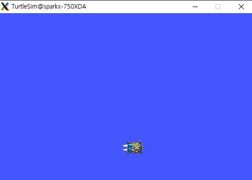
Vscode에서jupyter notebook 실행¶
Jupyter를 이용한 프로그래밍 Python으로 토픽 구독하기 준비
구독을위해필요한모듈import (코드실행: shift + enter)¶
Jupyter를 이용한 프로그래밍 Python으로 토픽 구독하기 토픽 구독하기
터미널에서아래명령어를이용하여topic list 조회¶
rclpy의초기화및‘/sub_test’ 노드생성¶
Jupyter를 이용한 프로그래밍 Python으로 토픽 구독하기 토픽 구독하기
터미널에서‘/sub_test’ 노드가생성되었음을확인¶
Subscription에서실행할callback 함수작성¶
Jupyter를 이용한 프로그래밍 Python으로 토픽 구독하기 토픽 구독하기 ‘data’의 구성 요소는x, y, theta, linear, angular velocity로 구성되어 있으므로x, y, theta를 확인하고 싶을 때에는data.x, data.y, data.theta로 조회 가능
Jupyter를 이용한 프로그래밍 Python으로 토픽 구독하기 토픽 구독하기 Pose : 데이터 타입 turtle1/pose : 토픽 이름 callback : 토픽이 들어오면 실행할 함수 10 : QoS History (메시지를 얼마나 저장할지 결정하는 인자)
토픽subscriber 만들기¶
test_node 구독¶
Jupyter를 이용한 프로그래밍 Python으로 토픽 발행하기
Vscode 실행¶
‘ros2 run’ 명령으로turtlesim 패키지의turtlesim_node를실행¶
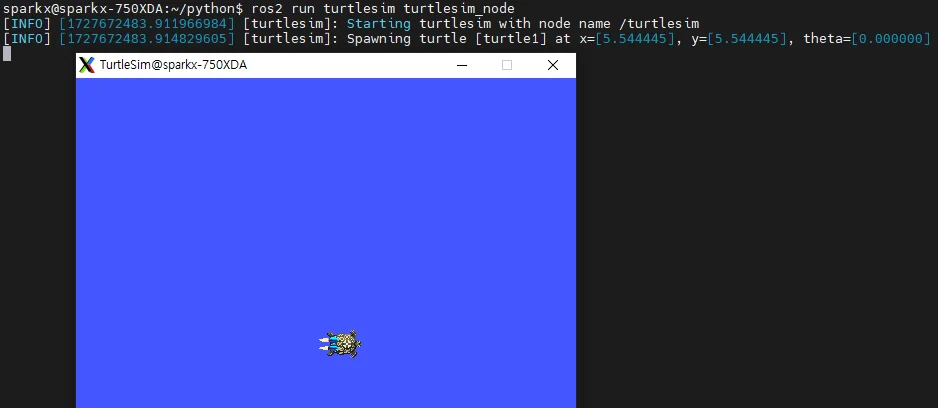
Jupyter를 이용한 프로그래밍 Python으로 토픽 발행하기
Vscode에서jupyter notebook 실행¶
준비
Jupyter를 이용한 프로그래밍 Python으로 토픽 발행하기
필요모듈import 및노드초기화¶
토픽 발행하기
cmd_vel 토픽의데이터타입인Twist 선언¶
cmd_vel: 로봇의 속도를 제어하기 위해 사용되는ROS 토픽
Jupyter를 이용한 프로그래밍 Python으로 토픽 발행하기
x축선형속도를2.0으로설정한후, 해당값을발행할메시지로준비¶
토픽 발행하기
Jupyter를 이용한 프로그래밍 Python으로 토픽 발행하기
토픽발행¶
토픽 발행하기
Jupyter를 이용한 프로그래밍 Python으로 토픽 발행하기
추가동작도가능¶
토픽 발행하기
Jupyter를 이용한 프로그래밍 Python으로 토픽 발행하기 토픽 발행하기
Timer를이용해토픽발행하기¶
timer_callback 함수가5번 이상 호출되지 않도록cnt를 이용한 조건 문을 넣어 줌
Jupyter를 이용한 프로그래밍 Python으로 토픽 발행하기 토픽 발행하기
Timer를이용해토픽발행하기¶
create_timer를 이용해2초마다timer_callback 함수 실행 rp.spin: ‘rp.spin_once’와는 달리 토픽을 지속적으로 수신하므로, 중간에 직접 멈추거나 멈춤 조건 을 설정해 주어야함
Jupyter를 이용한 프로그래밍 Python으로 토픽 발행하기 토픽 발행하기
노드종료시키기¶
Jupyter notebook의 경우 노트북을 종료시키기 직전에node를 종료시켜야함
Jupyter를 이용한 프로그래밍 Python으로 서비스 클라이언트 다루기 준비
vscode 실행¶
‘ros2 run’ 명령으로turtlesim 패키지의turtlesim_node를실행¶
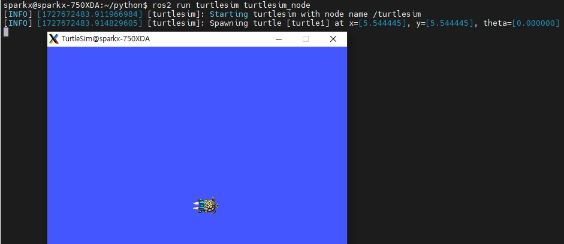
Jupyter를 이용한 프로그래밍 Python으로 서비스 클라이언트 다루기 서비스 클라이언트 생성
TeleportAbsolute :¶
rclpy 초기화및노드생성¶
‘/turtle1/teleport_absolute’ 서비스를 사용하기 위한 모듈import
Jupyter를 이용한 프로그래밍 Python으로 서비스 클라이언트 다루기 서비스 클라이언트 생성
‘/turtle1/teleport_absolute’라는서비스에연결하는클라이언트를생성¶
TeleportAbsolute 서비스에대한request 객체를생성¶
TeleportAbsolute : Turtle을 특정 좌표(x, y)와방향(θ)으로 즉시 텔레 포트시키는 서비스 타입
Jupyter를 이용한 프로그래밍 Python으로 서비스 클라이언트 다루기 서비스 클라이언트 생성
Request 객체의x 좌표를1.0, y 좌표를1.0, theta(회전각)를3.14로설정¶
Jupyter를 이용한 프로그래밍 Python으로 서비스 클라이언트 다루기 서비스 클라이언트 생성
설정req의x 성분만3.0으로바꾼후call_async를통해서비스를호출¶
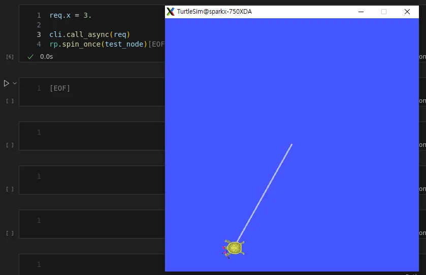
Jupyter를 이용한 프로그래밍 Python으로 서비스 클라이언트 다루기 서비스 클라이언트 생성
서비스가준비될때까지대기후비동기요청을호출하며test_node에서스핀을실행¶
wait_for_service: 지정한 서비스가 사용 가능할 때까지 대기하는 함수
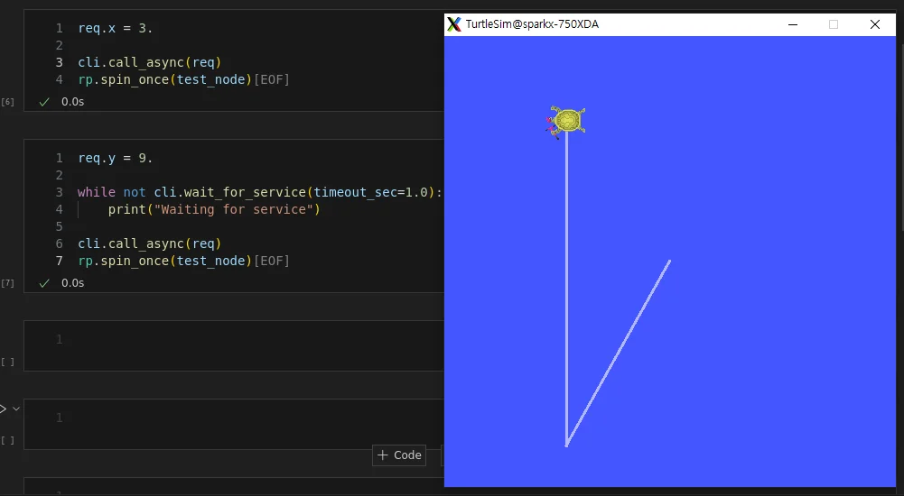
Jupyter를 이용한 프로그래밍 Python으로 서비스 클라이언트 다루기 서비스 클라이언트 생성
노드종료시키기¶
Jupyter를 이용한 프로그래밍 Python으로 액션 서버 다루기
vscode 실행¶
준비
‘ros2 run’ 명령으로turtlesim 패키지의turtlesim_node를실행¶

Jupyter를 이용한 프로그래밍 Python으로 액션 서버 다루기
action_server.ipynb파일생성¶
액션 서버 생성 action_server를 구현하기 위한 모듈import - TurtleRotateServer 클래스 정의 /turtle1/rotate_absolute에 대해 회전 명령을 처리하는 액션 서버 goal_callback, cancel_callback 메서드로 goal과cancel 상태 반환f정
Jupyter를 이용한 프로그래밍 Python으로 액션 서버 다루기
execute_callback() 메서드정의¶
액션 서버 생성 명령을 실행하고, 10초 동안 남은 진행 상태를 피드백으로 클라이언트에 전달 실행 도중 취소 요청이 들어오면 작업을 취소하고, 성공적으로 완료되면 결과를 반환
Jupyter를 이용한 프로그래밍 Python으로 액션 서버 다루기
액션서버초기화및인스턴스생성¶
액션 서버 생성 로그 메시지: 액션 서버가 성공적으로 시작되었음
액션서버실행¶
독립된 스레드에서 클라이언트의 요청 대기 로그 메시지: 클라이언트에서 요청을 수신했으며, 작업이 성공적으로 완료되었음
액션서버종료¶
터미널에서ctrl+c를 누르는 것과 같음
Jupyter를 이용한 프로그래밍 Python으로 액션 클라이언트 다루기
필요한모듈import (Ros2와액션메시지)¶
액션 클라이언트 생성
TurtleRotateClient 클래스정의¶
액션 클라이언트를 초기화 /turtle1/rotate_absolute 액션 서버와 통신 설정 send_goal : 목표 각도를 설정하고 서버로 전송
Jupyter를 이용한 프로그래밍 Python으로 액션 클라이언트 다루기
TurtleRotateClient 클래스의주요메서드들¶
액션 클라이언트 생성 goal_response_callback : 서버에서 각 도 정보를 수신했는지 확인 feedback_callback : 액션 실행 중 발생하는 피드백 로그를 기록 result_callback : 액션 완료 후 결과를 처리하고ROS 노드를 종료
Jupyter를 이용한 프로그래밍 Python으로 액션 클라이언트 다루기
액션클라이언트초기화및인스턴스생성¶
액션 클라이언트 생성 로그 메시지: 액션 클라이언트가 성공적으로 시작되었음
액션클라이언트실행후종료¶
Jupyter를 이용한 프로그래밍 Python으로 액션 클라이언트 다루기
액션클라이언트실행¶
액션 클라이언트 생성 액션 서버 피드백 회전하는 도중에 지속적으로 중간 실행 결과를 피드백 받을 수 있음 (실행전) (실행후)
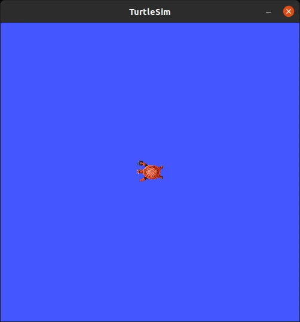
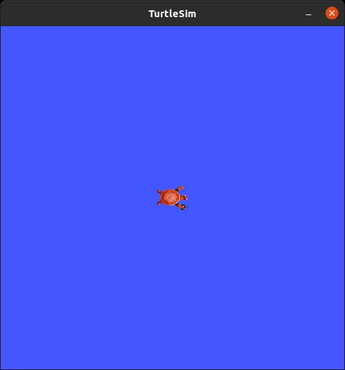
Code Examples¶
ros2env/¶
ros2env/ros2env/__init__.py¶
ros2env/ros2env/verb/__init__.py¶
from ros2cli.plugin_system import PLUGIN_SYSTEM_VERSION
from ros2cli.plugin_system import satisfies_version
class VerbExtension:
"""
The extension point for 'env' verb extensions.
The following properties must be defined:
* `NAME` (will be set to the entry point name)
The following methods must be defined:
* `main`
The following methods can be defined:
* `add_arguments`
"""
NAME = None
EXTENSION_POINT_VERSION = "0.1"
def __init__(self):
super(VerbExtension, self).__init__()
satisfies_version(PLUGIN_SYSTEM_VERSION, "^0.1")
def add_arguments(self, parser, cli_name):
pass
def main(self, *, args):
raise NotImplementedError()